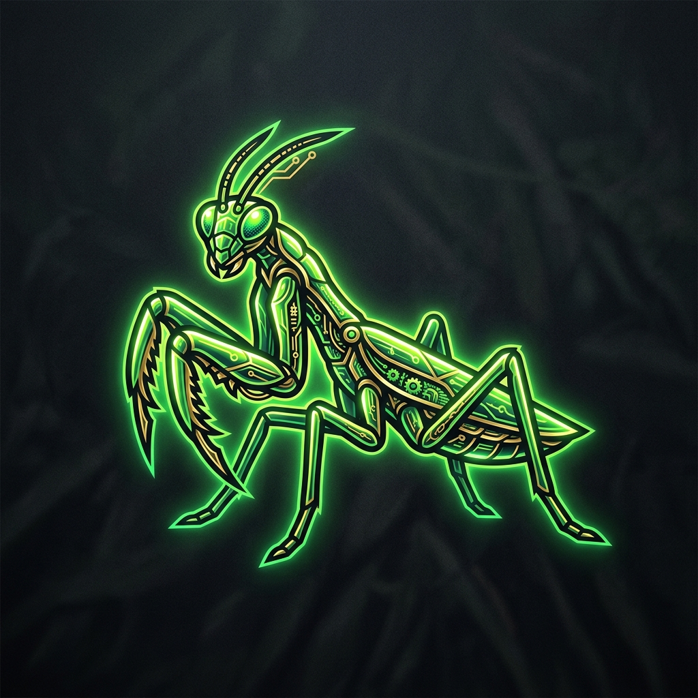

NEON MANTIS
Initiating Clandestine Carrot Operation...
An isometric solarpunk adventure where stealth meets sustainable agriculture. Uncover the golden root, hack the megacorp greenhouses, and feed the resistance.
Pre-order Terminal Access[SYS.INFO] About The Operation
In the subterranean levels of Neo-Veridia, a secret war is waged over the most crucial resource: the Solaris Carrot. As an operative of the Neon Mantis faction, you must navigate complex isometric environments, utilizing advanced solarpunk tech to outsmart drone patrols.
- Genre: Isometric Stealth Puzzle
- Aesthetic: Solarpunk / Cassette Futurism
- Objective: Procure the root.
[SYS.INTEL] Core Features
Botanical Hacking
Override security protocols using bioluminescent network interfaces.
Tactical Stealth
Use shadows and plant overgrowth to your advantage. Avoid the glare of corp-bots.
Upgradable Gear
Scavenge parts to build better EMP grenades and organic cloaking devices.